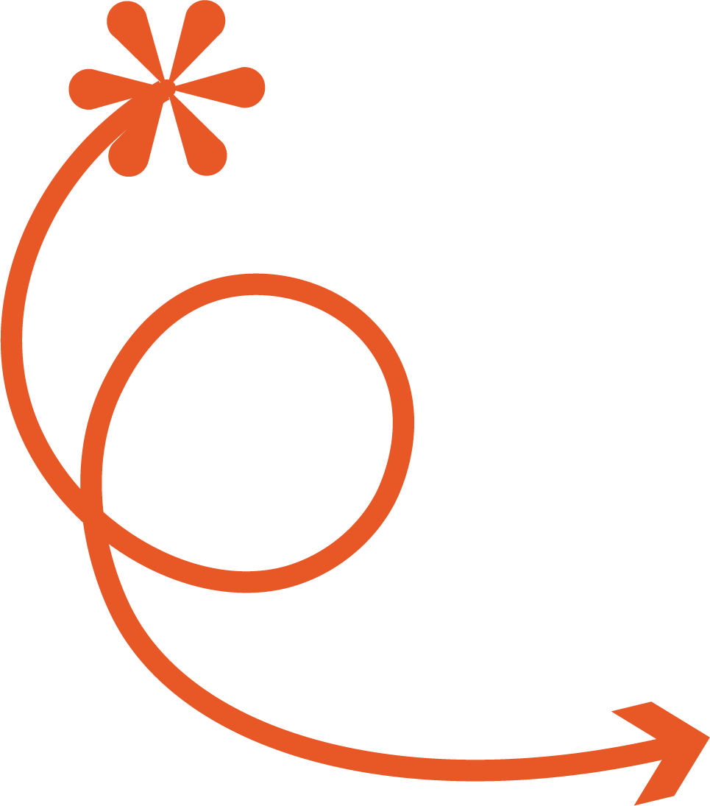
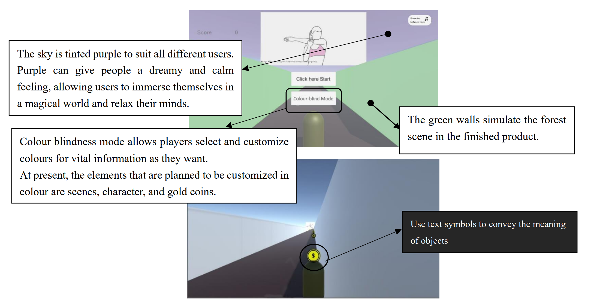

Stretch Adventure
Tool used: Arduino IDE, Unity, Excel
Duration: 16th August - 16th November 2021 as part of Course Digital Prototyping at UQ
*Due to the COVID-19 lockdown, the project was completed in a remote mode. View the demo video

The background & Research
Stretch Adventure is a well-thought-out and researched idea under the course theme: A Game Augmenting Everyday Life. It aims to improve office workers' happiness and physical health, helping them have a more fulfilling workday.
Through literature review, survey, and interviews, I comprehensively understood the problem space and
studied feasibility. Based on the literature review, I created a questionnaire, distributed it on Google
Forms and received 89 valid responses. Three open-ended interviews were conducted to address the key
findings from the questionnaire analysis.

Through exploration of the problem space, my data analysis shows that a large proportion of office workers
experience self-reported upper limb muscle fatigue issues. There is a demand for muscle relaxation, but the
current conditions are insufficient to support and encourage them to engage in muscle relaxation during
their leisure time at work. And a large portion of them lacks relevant knowledge about muscle relaxation.
According to the survey results, Stretch Adventure is positioned as a system that encourages and
guides the users to perform muscle relaxation in limited circumstances.
Conceptual Design
Stretch Adventure is a somatosensory game designed to alleviate the strains and pains of prolonged desk work.
The target user for the game is young white-collar workers in office buildings. They are interested in
new technology and also pay attention to health management. They are often willing to invest in their
physical fitness; many of them own or are interested in purchasing wearable devices such as smartwatches
or fitness trackers.
The game is designed to use sensors on wearable devices to guide target users to finish simple
stretches. By completing a set of stretching exercises to pass a game level, I hope the design can enhance
the user's sense of achievement and cultivate the user's stretching habits.The design hope to give users
physical relief and mental relaxation by allowing them to stretch through a
fun game.
Storyboard
Prototyping - Phase 1: Development
-Prototype -Design Rational
The scene's width: In my test, I usually need 2-4s to change from one
stretching
to the following.
The length of the scene: THE UNIVERSITY OF CALIFORNIA recommends people take
a
five or ten minutes break to do a series of stretches after sitting a long time at a desk or computer
terminal.
The number of coins: According to research, holding the stretch for 20
seconds
is reasonable. In future development, 20 seconds will be taken as the standard to consider the placement
of
coins.
-User Test
For usability testing, I used an interview format to ask testers about their feelings and suggestions
for the game after they played it.
Besides demonstrating the prototype's usability, the purpose of testing is to prove its effectiveness in
addressing design opportunities in the problem space. Our game has two objectives: muscle relaxation and
mental relaxation, so I designed two evaluation methods for the test.
For the muscle relaxation effect,
instruments used to evaluate muscle tension are expensive or require professional knowledge. After
considering and referring to the literature (Bhimani et al., 2017), I used a
self-rating scale.
Participants use different adjectives to describe their physical sensations before and after playing the
game.
For the mental relaxation effect, I used the SAS (Self-Rating Anxiety
Scale)
to evaluate, which is
widely used in the field of psychology to measure individuals' mental stress (Dunstan & Scott, 2020).
-Evaluation
I invited 9 testers to participate in the whole testing process, including the experience and interview.
Through the interviews, the testers evaluated the interface's usability, the completeness of the game
functions, and the effectiveness of the design. I summarized their data after the interviews.
-Muscle self-rating and SAS(Self-Rating Anxiety
Scale) Visualization: Before the game
-Muscle self-rating and SAS(Self-Rating Anxiety
Scale) Visualization: After the game
By comparing the word clouds before and after the test, it can be found that the overall muscle tension of
the testers has decreased by one level. The main feeling has changed from "stiff" to "good". Therefore, this
game does help people to relax their bodies by guiding them to do some practical stretching exercises. This
result is consistent with the widely recognized fact that stretching can relieve muscle fatigue.
However, in evaluating the mental relaxation scale, only one tester's data has changed, which can be
considered to have almost no significant effect.
By comparing data before and after the test, we can conclude that the game has an
effect on muscle
relaxation, but its impact on mental relaxation is limited. I think this is because muscle
relaxation
mainly depends on stretching, and the prototype has already implemented the main functions related to
stretching. However, mental relaxation depends on the influence of muscle relaxation and the missing
game graphics and sound effects in the current prototype. The lack of motivation for passing the game
also leads to a poor effect on mental relaxation.
Prototyping - Phase 2: Iteration
Improvements were made based on the test results, including:- Adding more stretching exercises in the game and extending the game time to the recommended 3-5 minutes.
- Improving the usability of the prototype interface by adding stretching guidance reminders, making the interface design more in line with the purpose of exercise guidance.
- Adding sound effects in the game enhances the mental relaxation function reflected in the prototype, making the prototype closer to the finished product so that the test can verify the functions.
I used the same testing
method as the previous phrase in this test phrase. I will conduct two rounds of
testing this time. The first round of testing will have no background music to compare whether the
extended stretching time has improved the results. The second round will include background music to
test whether adding background music positively affects mental relaxation mainly.
as the previous phrase in this test phrase. I will conduct two rounds of
testing this time. The first round of testing will have no background music to compare whether the
extended stretching time has improved the results. The second round will include background music to
test whether adding background music positively affects mental relaxation mainly.
*Both rounds of testing will control variables to ensure valid results.
-Evaluation
as the previous phrase in this test phrase. I will conduct two rounds of
testing this time. The first round of testing will have no background music to compare whether the
extended stretching time has improved the results. The second round will include background music to
test whether adding background music positively affects mental relaxation mainly. *Both rounds of testing will control variables to ensure valid results.
A total of nine participants took part in the test. Here is the interview data.
-Muscle self-rating and SAS(Self-Rating Anxiety
Scale) Visualization: Before the game(Compared with phrase 1)
-Muscle self-rating and SAS(Self-Rating Anxiety
Scale) Visualization: After the game(Compared with phrase 1)
-SAS(Self-Rating Anxiety
Scale) Visualization: After the game with background music
Comparing the two tests found that the degree and frequency of the vocabulary used by the testers for
description were similar before the tests, which can be regarded as the exact prerequisite for the two
tests. After the tests, compared to the previous test, although "stiff" and "dull" still appeared in this
test, the frequency of occurrence decreased. At the same time, the frequency of "relax" increased
significantly.
This result is consistent with the widely accepted view that stretching can relieve muscle
fatigue. It can be considered that extending the game time did increase the relaxation effect.
It is foreseeable that within the stretching time recommended by the authority, the stretching effect
will increase as the stretching time increases. Therefore, as long as the time is extended to the
recommended time, the game will have an optimised effect.
Regarding mental relaxation, the improved prototype without background music is slightly better than the
previous prototype. Still, the difference is insignificant, indicating that the prerequisites of the tests
are consistent.
Based on the result, the prototype with added background music is more effective than the
one without. The number of testers in the 35-45 score group has decreased significantly. The number in
the 65-75 score group has increased considerably, indicating that the testers'
mental pressure has been
effectively relieved.
Therefore, it can be considered that adding background music can indeed enhance the
relaxing effect of the game on people's mental state. With the refinement of art resources and reward
mechanisms, the effect of mental relaxation will likely be further improved.
Prototyping - Accessibility Reflection
The target user with accessibility needs is the colour-blind user. Colour-blind people usually cannot distinguish between specific colours. It will cause the information presented through colour can be unreadable or completely invisible, friendly players can look like enemies, and game elements can become camouflaged against each other in the game.
As many as 8 per cent of men and 0.4 per cent of women
experience congenital colour deficiency(Chan et al., 2014). It means that the colour-blind group has
this
non-negligible proportion among gamers, and colour blindness does interfere with the game experience.
Unlike other accessibility needs like those who lose of limb, which requires a complete redesign of game
content or who are blind that may conflict with the game's original intention (a visual incentive game),
the colour
blind people are already on the target list. And the game can meet its accessibility needs with a
limited redesign.
-Design Guideline
After browsing the websites of many organisations dedicated to game accessibility and referring to WCAG
(Web
Content Accessibility Guidelines)2.1 related colour design guidelines, I summarised a set of colour
barrier
design guidelines to check any unfriendly design for colour-blind players and use it as a guide for game
development in the future.
- Ensure no essential information is conveyed by a fixed colour alone. Considering the extreme situation like Monochromacy, it is best to provide text instead of colour to convey information
- Ensure the contrast ratio is over 3:1 because some colours may appear darker than without colour deficiency. It makes the game object distinguishable from everything else in the game.
- Ideally, players can select and customise colours for vital information (colour blindness mode). If not possible, include a simple colour palette that can be used as a single-colour choice that is not problematic for those with colour blindness.
Due to the tight development schedule, it was challenging to access colour-blind patients for data
collection. I conducted accessibility testing of the game interface through a colour-blindness simulator
and got the literature's help.
For a long time, artists and designers have believed that colours can significantly influence emotions,
feelings, and moods and have developed what is known as colour psychology
(Elliot & Maier, 2014). The
colour-blind players may be affected by the abnormal colours they see, which could reduce the game's
relaxation effect.
Researchers and experts have made some significant findings on the impact of colour
psychology on emotions, feelings, and behaviours. Colours in the red spectrum are called warm colours.
These
warm colours evoke emotions ranging from warmth and comfort to anger and hostility (O'Connor, 2011). My
previous simulation test showed that the vision of green-blind users was all in red. Prolonged exposure
to
red light may make green-blind users feel less relaxed. To solve this problem, I tried
various colours
in
the redesign. I put the redesign plan into the simulator to verify the design.
-Redesign Prototype

View the demo video
The above is the design and development process of the Stretch Adventure, welcome to click the links to
watch the demo, or please feel free to browse my other works :)
Reference
Bhimani, R. H., Gaugler, J. E., & Skay, C. (2017). Understanding symptom experiences of muscle tightness from patients’ and clinicians’ perspectives. Journal of Clinical Nursing, 26(13-14), 1927–1938. https://doi.org/10.1111/jocn.135067.
Chan, X. B., Goh, S. M., & Tan, N. C. (2014). Subjects with colour vision deficiency in the community:
What do primary care physicians need to know? Asia Pacific Family Medicine, 13(1).
https://doi.org/10.1186/s12930-014-0010-3
Dunstan, D. A., & Scott, N. (2020). Norms for zung’s self-rating anxiety scale. BMC Psychiatry, 20(1).
https://doi.org/10.1186/s12888-019-2427-6
Elliot, A. J., & Maier, M. A. (2014). Color psychology: Effects of perceiving color on psychological
functioning in humans. Annual Review of Psychology, 65(1), 95–120.
https://doi.org/10.1146/annurev-psych-010213-115035
O'Connor, Z. (2011). Colour psychology and colour therapy: Caveat emptor. Color Research & Application,
36(3), 229–234. https://doi.org/10.1002/col.20597
ScienceDaily. (2017, March 30). It's true: The sound of nature helps us relax. ScienceDaily. Retrieved
May 1, 2023, from https://www.sciencedaily.com/releases/2017/03/170330132354.htm